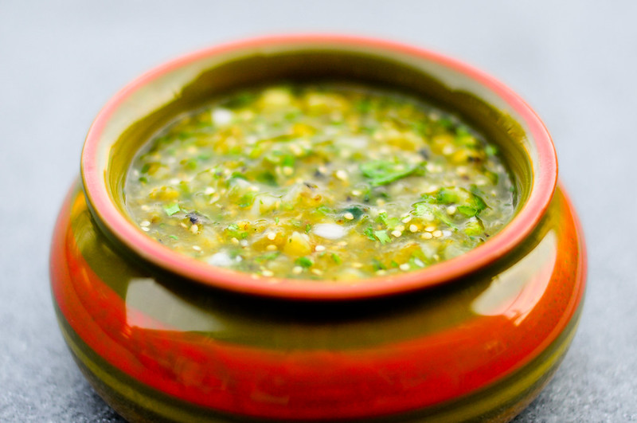

Salsa Verde

Description
This easy recipe for salsa verde Mexicana — green tomatillo salsa — has a fabulous fresh flavour that will add zip to grilled meats, tortilla wraps or even scrambled eggs.
For the best flavour and texture, make it in a molcajete, the Mexican version of a mortar and pestle!
Ingredients
- 1.5 cups tomatillos or miltomate husked, cleaned and rinsed
- 1/4 cup white onion chopped
- 3 stalks cilantro roughly chopped
- 1 chile tusta or serrano 4 or to taste whole, stems removed (or chile serrano)
- 1 clove garlic whole
- 1/2 teaspoon salt to taste
Steps
- Cover tomatillos, chiles and garlic with just enough water to cover in a small sauce pan.
- Simmer until the tomatillos start to turn a drab olive colour. Be sure not to overcook. They should be soft but not mushy.
- Let cool for a few minutes.
- Strain the ingredients reserving the water.
- Place the salt, tomatillos, peeled garlic, cilantro and chiles into a blender jar, food processor or molcajete (Mexican mortar and pestle).
- Blend to a rough textured sauce, add reserved water as needed.
- Garnish with chopped white onion.
- Salt to taste .
Home